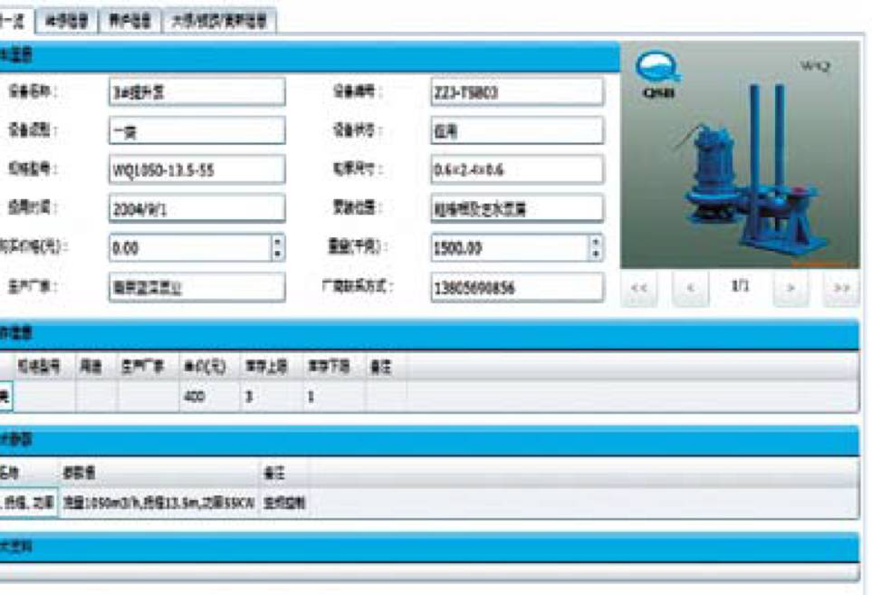
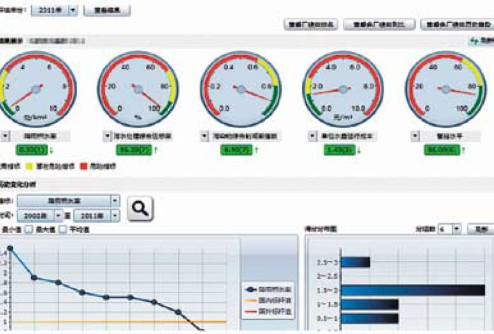
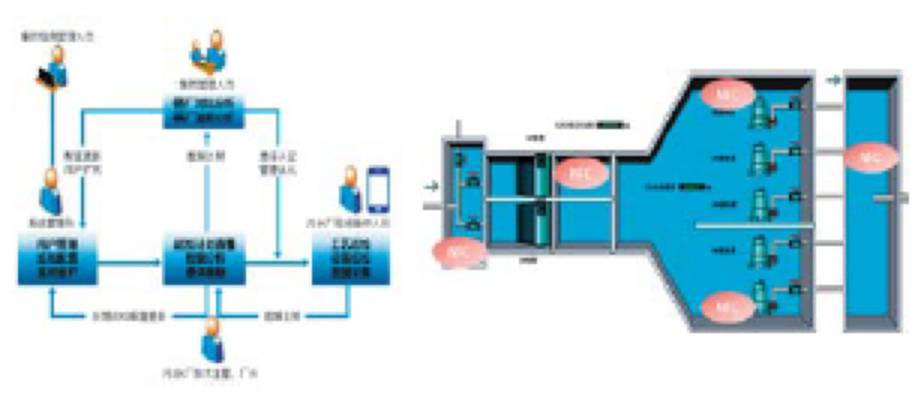
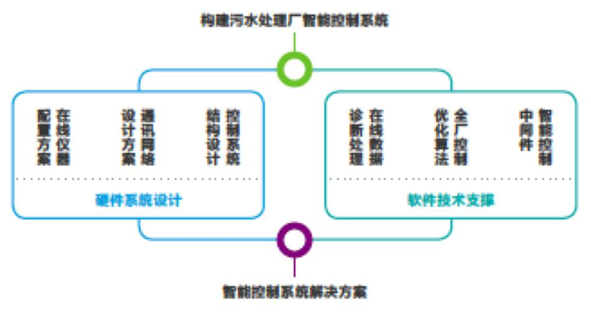
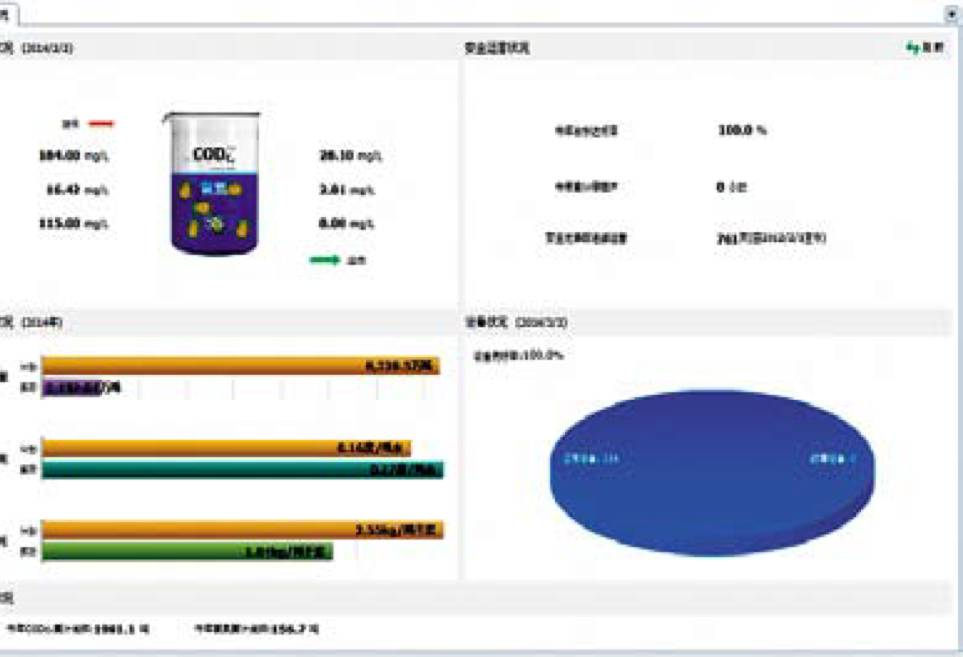

-
Remote monitoring system
污水厂远程监控系统远程监控系统融合互联网技术、在线监测技术与远程数据采集与传输技术，实现多个污水厂运行过程远程同步实时监控。系统基于Web开发,可在线查看污水厂工艺运行数据及设备运行状态，短信接收并远程处理报警信息。
产品模块
● 工艺流程画面模块
● 运行曲线查询模块
● 实时报警管理模块
● 在线数据展示模块
● 运行数据统计模块
● 远程监控移动平台
技术特点
● 采用数据压缩、断网续传等机制保证数据传输的高效性、安全性与完整性
● 报警信息支持以短信、微信等形式发送至相关人员工作手机
● 系统提供标准数据接口，可与专家系统联动实现专家诊断与故障分析
Equipment management system
污水厂设备管理系统设备管理系统立足于实现对污水厂设备完整生命周期管理，系统将设备管理模式与作业流程进行标准化，通过科学规范的管理方法使设备处于最佳的工作状态，提高设备养护效率，降低设备维护成本。
产品模块
● 设备资产管理模块
● 设备养护管理模块
● 设备管理移动平台
● 设备维修管理模块
● 设备统计分析模块
技术特点
● B/S架构，部署灵活
● 完好率、养护完成率、维护成本全面统计
● 运维信息汇总展示，查询便捷
● 手机端支持故障现场上报，快速反馈
● 养护任务周期循环，到期提醒
Performance evaluation system
污水厂绩效评估系统绩效评估系统着眼于污水厂运行绩效，采用体检评分制度，通过将评估指标体系应用于待评估污水厂，对污水厂整体运营状况进行系统式考核评定，并将评估结果以统计图表及评估报告的方式进行反馈与发布，为运营管理者制定决策提供依据与支持。
产品模块
● 绩效指标管理模块
● 评估数据管理模块
● 评估标准管理模块
● 评估结果展示模块
技术特点
● B/S架构，灵活部署
● 稳定而高效的评估计算引擎
● 评估数据支持模板管理，一键导入
● 指标逐级分解，追踪至数据源
● 标杆值、风险值可动态配置
● 多层次评价结果展示方式
Manufacturing patrol system
污水厂精细生产巡检系统借助移动互联网技术，通过简单易操作的触控手机实现生产巡检全过程、精细化、数字化的管理，建立现代化的污水厂生产巡检系统。
技术特点
即配即用
● 网页配置巡检任务、NFC卡片免费邮寄、手机安装APP运行
● 巡检内容与周期自定义配置、选择项配置提供标准化模板
● 手机智能登录、任务提醒、刷卡工作、现场即时帮助
高性价比、更易维护
● 借助云平台，用户无需自建服务器、无需专人维护，综合成本更低
● 数据永久存储、永久在线
● 云安全策略、分用户存储、数据保密等安全机制，保证数据安全
应用领域
● 污水厂运行台账电子化与标准化
● 污水厂工艺精细巡检管理
● 污水厂设备精细巡检管理
● 设备维修、养护、故障处理现场作业指导
Smart control system
污水厂全流程智能控制系统污水厂智能控制系统致力于通过工艺、控制以及软硬件的有效融合，提供自动化、精细化、智能化的控制管理。系统不但能够优化运行条件，保障污水处理过程安全稳定运行,实现现场“无人值守”的管控模式，还能够节能降耗，降低污水厂运行成本。
产品模块
● 全流程智能控制模块
● 鼓风曝气智能控制模块
● 进水泵站智能控制模块
● 化学除磷智能控制模块
技术特点
● 最佳的仪表设备布局方案
● 精细的故障识别诊断算法
● 稳健的智能优化控制策略
● 专业的工艺参数调试维护
应用领域
● 污水厂自动化控制
● “无人值守”型厂站管理模式构建
● 污水厂节能降耗改造
Manufacturing management system
污水厂生产管理系统生产管理系统实现对生产数据的标准化、信息化管理和专业化统计分析，以提高管理效率、提升管理水平。通过数据填报实现对离线数据的采集，以严谨的“填报-审批”流程,保证上报数据的准确性，自动统计各厂上报数据，为不同角色管理者定制生产报表，以多角度统计分析图表方式，为管理者制定生产决策提供数据支持。
产品模块
● 数据填报管理模块
● 生产报表管理模块
● 生产统计分析模块
● 生产管理移动平台
技术特点
● 标准化工作流程设计
● 多用户角色协同作业
● 良好开放性与扩展性
● 多维度数据统计分析
● 高可靠通讯传输保障